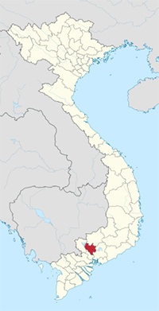
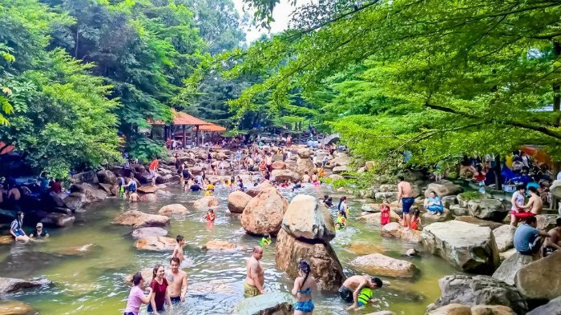
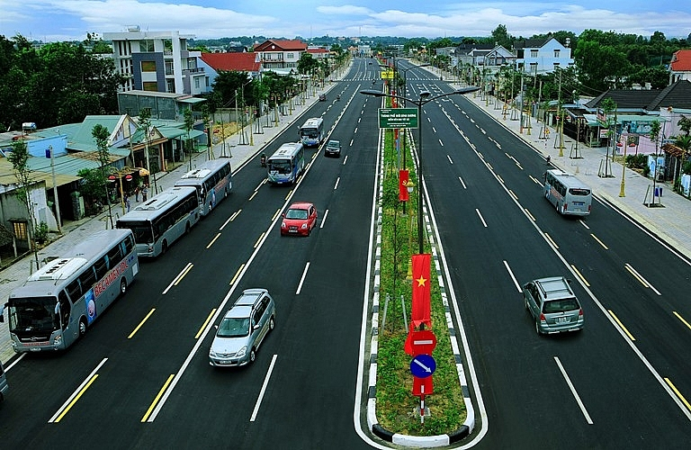

Introduction to Binh Duong Travel
Binh Duong is located in the south of Vietnam. It is surrounded by Binh Phuoc to the north, Tay Ninh to the west, Dong Nai to the east, and Ho Chi Minh City to the south.

Binh Duong province is located at the transition between the southern slope of the Truong Son mountain chain and the Mekong Delta provinces; plain terrain, light wavy. Elevation varies from 10 to 15 meters above sea level.
Terrain in Binh Duong is relatively flat, sloping from north to south. Across this province, there are many different topographic regions, including low mountainous terrain with slight undulation, flat plains and alluvial valley. There are some low mountains, including Chau Thoi in Di An District and the Cau mountain (also called Lap Vo) in Dau Tieng district and some low hills.
Binh Duong has bazan that is convenient for rubber and coffee trees; alluvial deposits region with many paddy and fruit gardens. The network of rivers and canals are complete with Dong Nai, Sai Gon, Be rivers.
Highlights of Binh Duong's tourism:
Back in history, Binh Duong used to be a part of Song Be province, which was divided into Binh Duong and Binh Phuoc in 1997. It was discovered at the same time with Saigon-Dong Nai in the territory expands to the South process led by Nguyen Huu Canh. Due to special historical events, there are up to 15 ethnic groups living in Binh Duong. Apart from the Kinh, the Hoa people are the most populated followed by Khmer and other ethnic people.

Though Binh Duong is more suitable for expats who come to live and work rather than to travel, there are still some interesting cultural activities that are significant for Binh Duong province and cannot be missed like Lady Thien Hau Pagoda – a worshipping site and religious place attracting amny pilgrims from all over the country. Every year on the 15th of the 1st lunar month, there is Lady Thien Hau Pagoda Festival - the anniversary of the death of Lady Thien Hau.
For those who love eating tropical fruits but could not afford a trip to Mekong delta province, Fruit Garden in Lai Thieu can satisfy you somehow. The fruit Lai Thieu is most famous for is mangosteen.
Binh Duong is also famous for skilful craftworks villages: ceramics and pottery, wooden shoe, wood sculpture, lacquer, etc. If you are curious about how to make these stuffs manually, you should pay a visit to Binh Duong Province. Minh Long ceramics, Binh Nham Wooden Shoe village, Phu Tho Wood Sculpture village, Tuong Binh Hiep Binh Lacquer village are recommended places to visit.
Tourists are also recommended to visit Lac Canh Dai Nam Van Hien Tourism Complex when coming to Binh Duong. The tourist site is located in Hiep An Ward, Thu Dau Mot Town, Binh Duong Province, about 30km north of Ho Chi Minh City. With area of 476ha, Lac Canh Dai Nam Van Hien is a complex of temples, mountain, river, hotel, entertainment area. The salient feature of Lac Canh Dai Nam Van Hien Tourist Site is 61ha spirit area. Of which, the worship area surrounded by two giant 270m-long dragons is special place for Vietnam's cultural, historical significances and quintessence through 4,000 years of history. Modern entertainment area can meet demands of tourists with over 40 games of adventure, thrill, relaxation and discovery. The water games for children, sport court for adults and sea-foods will bring tourists comfortable relaxation time. One of the other attractive places of Lac Canh Dai Nam Van Hien Tourist Site is zoo with area of 12.5ha. This is the first zoo in Vietnam with over 100 species of mammals, birds, reptiles and ornamental fishes that live together in a diversified ecologic environment.
Transport:
